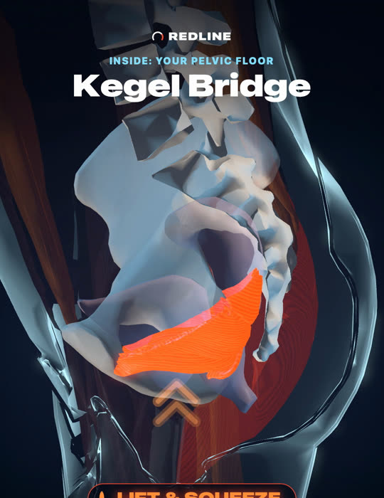

KEGEL TRAINER FOR MEN
See every squeeze.
Redline shows every pelvic floor exercise on a real 3D anatomy model. Muscles glow as they work, and the pelvic cross-section shows the pelvic floor lift with every squeeze.
- 21 exercises in interactive 3D, from classic Kegels to bridges, squats and planks
- An 84-day plan built from your goals, level and the time you have, getting harder as you progress
- Voice coaching from Mia or Cole, plus haptic cues, so you can train with your eyes closed
- No account and no tracking. Your training stays on your iPhone.
